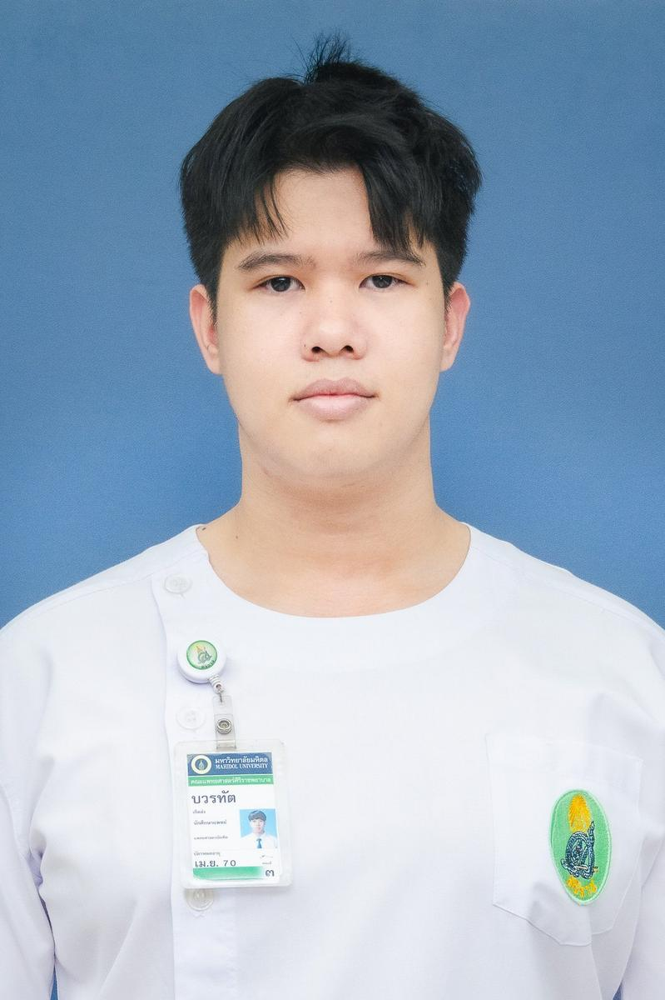
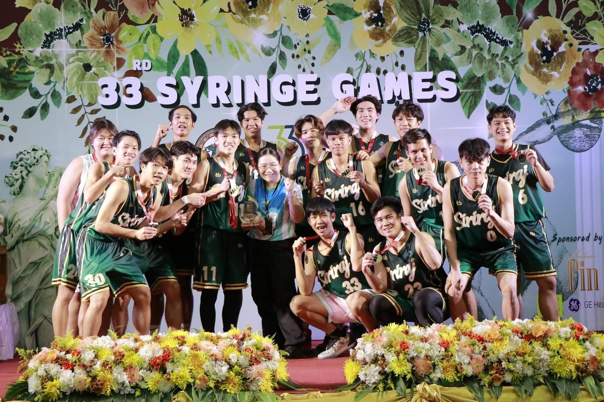
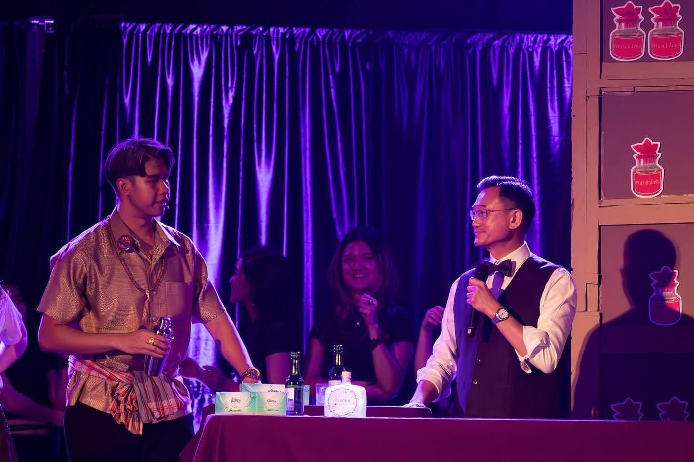
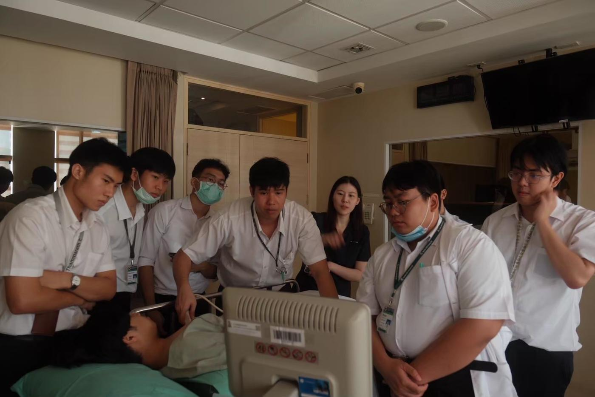
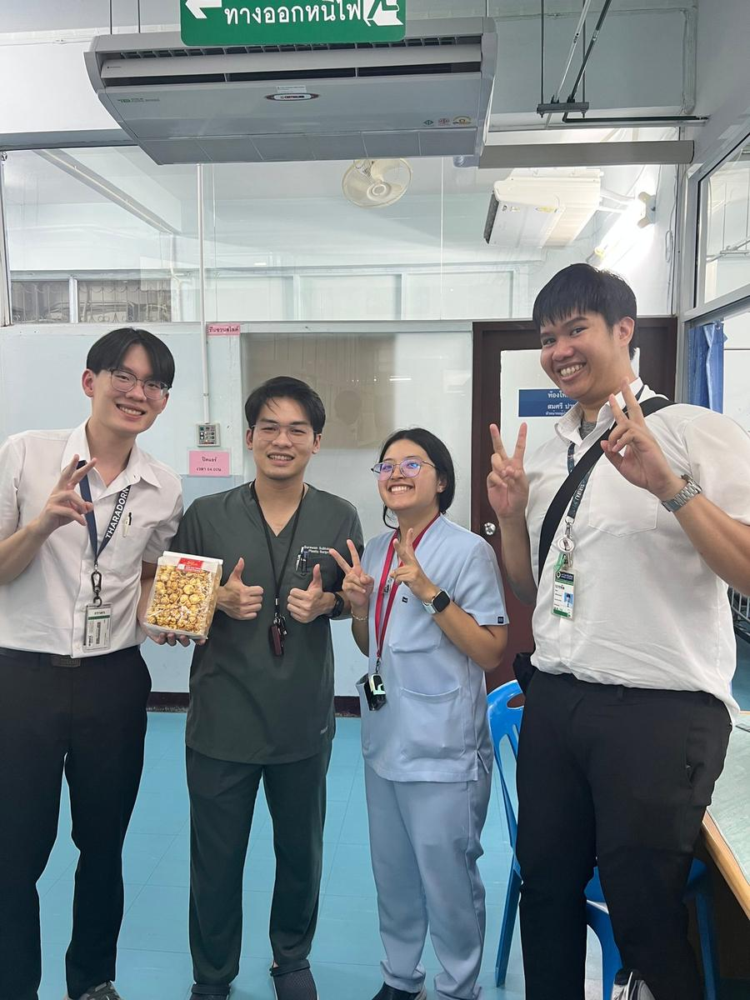
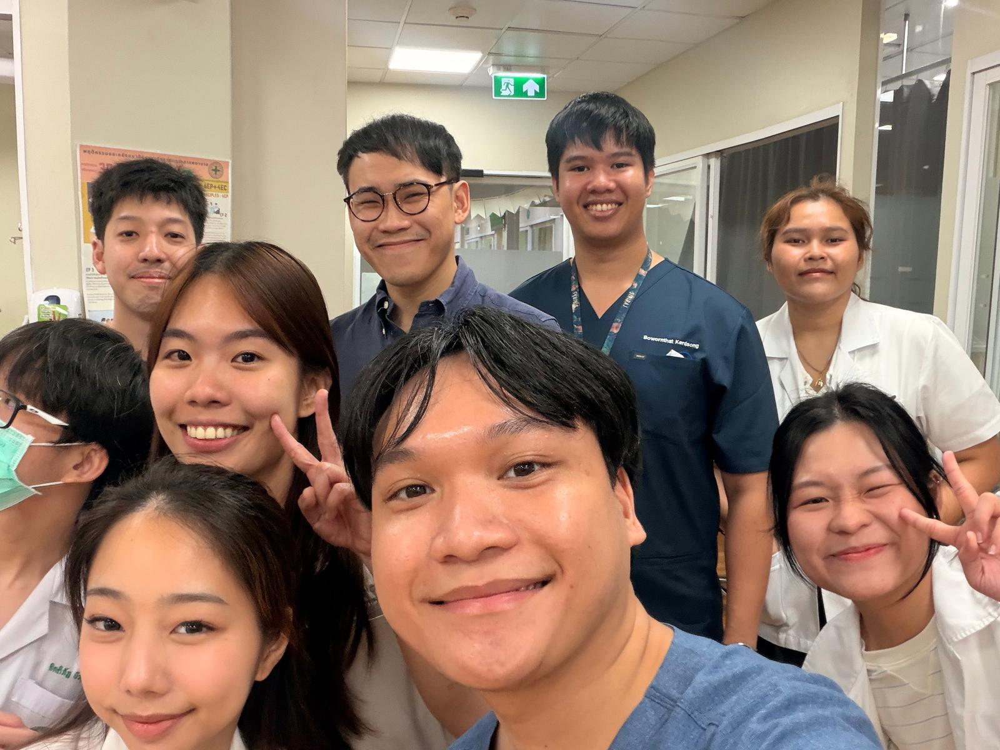
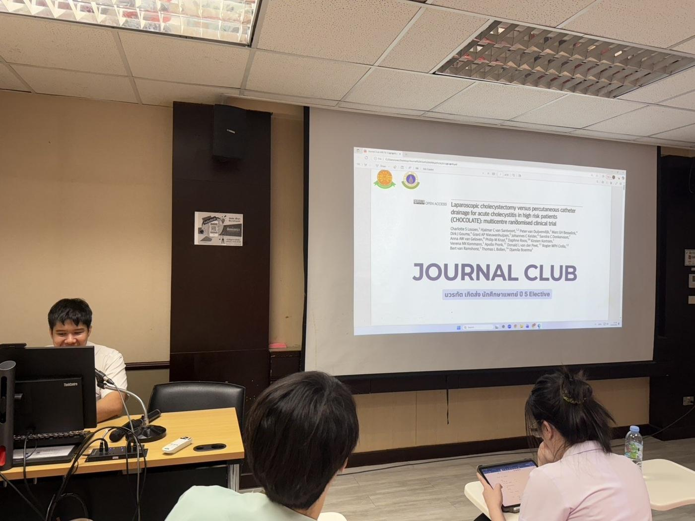

E-PORTFOLIO · SERVICE PHYSICIAN 2570/2027E-PORTFOLIO · SERVICE PHYSICIAN 2027 (B.E. 2570)
บวรทัต เกิดส่งบวรทัต เกิดส่ง
Bowornthat Kerdsong · ก้าว (Kao)บวรทัต เกิดส่ง · Kao (ก้าว)
นักศึกษาแพทย์ชั้นปีที่ 6 คณะแพทยศาสตร์ศิริราชพยาบาล มหาวิทยาลัยมหิดล คาดสำเร็จการศึกษา พ.ศ. 2570Sixth-year medical student, Faculty of Medicine Siriraj Hospital, Mahidol University. Expected graduation 2027.
สมัครเป็นแพทย์ใช้ทุน ภาควิชาศัลยศาสตร์ คณะแพทยศาสตร์ มหาวิทยาลัยธรรมศาสตร์ ปีการศึกษา 2570Applying for the service physician programme, Department of Surgery, Faculty of Medicine, Thammasat University, academic year 2027 (B.E. 2570).
นักศึกษาแพทย์ชั้นปีสุดท้าย คณะแพทยศาสตร์ศิริราชพยาบาล ผู้มุ่งสู่เส้นทางอาจารย์แพทย์ทางศัลยศาสตร์ ข้าพเจ้าเป็นผู้เรียนรู้ด้วยตนเองที่พัฒนาได้เร็วที่สุดภายใต้การชี้แนะของอาจารย์ที่ดี แสวงหาความรับผิดชอบที่เกินกว่าระดับชั้นของตน และมองความผิดพลาดเป็นโอกาสในการปรับตัว มิใช่การถอยหลัง ปัจจุบันข้าพเจ้ายังพิจารณาระหว่างสาขาศัลยศาสตร์หัวใจ หลอดเลือด และทรวงอก กับสาขาศัลยศาสตร์ตับ ตับอ่อน และทางเดินน้ำดี ซึ่งเป็นสาขาของคำถามวิจัยที่ข้าพเจ้าริเริ่มเอง และตั้งใจตัดสินใจจากการปฏิบัติงานทางคลินิกอย่างต่อเนื่องในช่วงชดใช้ทุน
Final-year medical student at Siriraj Hospital working toward an academic career in surgery. A self-directed learner who advances fastest under strong mentorship, I seek responsibility beyond my stage of training and treat setbacks as recalibration rather than retreat. My subspecialty choice remains open between cardio-vascular-thoracic and hepato-pancreato-biliary surgery — the latter the field of a research question I conceived — and I intend to settle it through sustained clinical exposure during the service period.
VITAL SIGNS
ตัวเลขสำคัญKey figures
รายวิชาเลือกทางคลินิก จาก 4 สถาบันClinical electives across 4 institutions
สัปดาห์ที่ธรรมศาสตร์ จาก 4 รายวิชาเลือกWeeks at Thammasat across 4 electives
แชมป์ Syringe Games 3 สมัยติดต่อกัน พ.ศ. 2565–2567Consecutive Syringe Games championships, 2022 to 2024
Proficient User (Advanced) · 17 ต.ค. 2569Proficient User (Advanced), 17 Oct 2026
แพทยศาสตรบัณฑิต ศิริราช · คาดสำเร็จการศึกษา พ.ศ. 2570M.D. at Siriraj, expected graduation 2027
อันดับ 1 ของนักศึกษาแพทย์ ธรรมศาสตร์ 2569First among medical students, Thammasat 2026
TIMELINE · 2015 → 2027
เส้นทางตามลำดับเวลาPath so far
- 2015–20พ.ศ. 2558–63B.E. 2558–63การศึกษาEDUCATION
โรงเรียนอุตรดิตถ์Uttaradit School
การศึกษาระดับมัธยม จังหวัดอุตรดิตถ์ ภูมิลำเนาเดิมของผู้สมัครSecondary school in Uttaradit Province, my home province.
- 2018พ.ศ. 2561B.E. 2561วิชาการACADEMIC
ค่ายโอลิมปิกวิชาการ สอวน. สาขาคณิตศาสตร์POSN Mathematics Olympiad camp
ผ่านการคัดเลือกเข้าค่ายที่ 2 มหาวิทยาลัยนเรศวรSelected for the second camp, Naresuan University.
- 2019พ.ศ. 2562B.E. 2562วิชาการACADEMIC
ค่ายโอลิมปิกวิชาการ สอวน. สาขาฟิสิกส์POSN Physics Olympiad camp
ผ่านการคัดเลือกเข้าค่ายที่ 2 มหาวิทยาลัยนเรศวรSelected for the second camp, Naresuan University.
- นำเสนอPRESENTATION
แบบจำลองเส้นรอบรูปของรูปหลายเหลี่ยมด้านเท่า n ด้านPerimeter model for regular n-gons
นำเสนอแบบบรรยาย (ภาษาอังกฤษ) ในการประชุมนานาชาติสำหรับนักเรียน และแบบโปสเตอร์ (ภาษาไทย) ในโครงการ พสวท.Oral presentation in English at an international student conference, and a poster in Thai for the POSN talent programme.
- 2021พ.ศ. 2564B.E. 2564การศึกษาEDUCATION
เริ่มเรียนแพทยศาสตรบัณฑิต คณะแพทยศาสตร์ศิริราชพยาบาลBegan the M.D. programme, Siriraj
มหาวิทยาลัยมหิดล เกรดเฉลี่ยสะสม 3.66 คาดสำเร็จการศึกษา พ.ศ. 2570Mahidol University. GPA 3.66, expected graduation 2027.
- 2022พ.ศ. 2565B.E. 2565รางวัลAWARD
แชมป์ Syringe Games สมัยแรกFirst Syringe Games title
การแข่งขันกีฬานักศึกษาแพทย์แห่งประเทศไทย (กีฬาเข็มสัมพันธ์)National medical students sports competition.
- บริการสังคมSERVICE
หัวหน้าฝ่ายต้อนรับ พิธีพระราชทานเพลิงศพผู้อุทิศร่างกายHead of Reception, royally sponsored cremation for body donors
อำนวยการฝ่ายต้อนรับในพิธีของผู้อุทิศร่างกายเพื่อการศึกษาทางการแพทย์Directed reception for the ceremony honouring body donors.
- 2023พ.ศ. 2566B.E. 2566รางวัลAWARD
แชมป์ Syringe Games สมัยที่ 2 และชนะเลิศโต้วาทีทางการแพทย์Second Syringe Games title and Medical Debate winner
การแข่งขันโต้วาทีทางการแพทย์ของคณะแพทยศาสตร์ศิริราชพยาบาลMedical Debate Competition, Faculty of Medicine Siriraj Hospital.

แชมป์ Syringe Games 2023Syringe Games champions, 2023 - ภาวะผู้นำLEADERSHIP
นักแสดงนำ Siriraj Family Concert และกรรมการนักศึกษาLead actor, Siriraj Family Concert, and student committee
ประธานหอพักนักศึกษาชาย กรรมการนักศึกษาชั้นปีที่ 3 และประธานจัดการแข่งขันกีฬาภายใน SI 132Male dormitory president, third-year class committee, and chair of the SI 132 intramural sports.

นักแสดงนำ ละครเวทีประจำคณะฯ Siriraj Family Concert 2023Lead actor, Siriraj Family Concert 2023 - 2024พ.ศ. 2567B.E. 2567ภาวะผู้นำLEADERSHIP
ประธานชมรมบาสเกตบอลศิริราช และกัปตันทีมแชมป์สมัยที่ 3President of Siriraj Basketball Club, captain of the third title
ปัจจุบันเป็นที่ปรึกษาชมรมNow club advisor.
- นำเสนอPRESENTATION
มะเร็งลำไส้ใหญ่ในผู้ป่วยกลุ่มอาการลินช์Colorectal cancer in Lynch syndrome
การผ่าตัดแบบขยายขอบเขตเทียบกับเฉพาะส่วน นำเสนอแบบบรรยายและโปสเตอร์ งาน Siriraj Research DayExtended versus segmental resection. Oral and poster, Siriraj Research Day.
- 2025พ.ศ. 2568B.E. 2568รายวิชาเลือกELECTIVES
รายวิชาเลือกทางคลินิก 4 รายวิชาFour clinical electives
ศัลยศาสตร์ HPB และลำไส้ใหญ่และทวารหนัก ศิริราช (3 สัปดาห์ละสาขา) · โรคหัวใจ มช. (2 สัปดาห์) · อายุรศาสตร์ พุทธชินราช (2 สัปดาห์)HPB and colorectal surgery at Siriraj (3 weeks each), cardiology at Chiang Mai (2 weeks), internal medicine at Buddhachinaraj (2 weeks).
- 2025–26พ.ศ. 2568–69B.E. 2568–69ภาวะผู้นำLEADERSHIP
รองประธานชมรมศัลยศาสตร์ศิริราชVice President, Siriraj Surgical Society
ประธานโครงการเวิร์กช็อป Ultrasound in Surgical Emergency ฝึก POCUS ให้นักศึกษาแพทย์Project director of the Ultrasound in Surgical Emergency workshop, teaching point-of-care ultrasound.

วิทยากรสอนในเวิร์กช็อป Basic echocardiographyTeaching at a basic echocardiography workshop - 2026พ.ศ. 2569B.E. 2569รายวิชาเลือกELECTIVE
General Surgery โรงพยาบาลพุทธชินราชGeneral Surgery, Buddhachinaraj Hospital
ผ่าตัดไส้ติ่งแบบเปิดครั้งแรกในฐานะ first surgeon ภายใต้การ supervise ของแพทย์ประจำบ้าน (ชั้นปีที่ 5)First open appendectomy as leading surgeon under resident supervision (fifth year).

กับแพทย์ประจำบ้านศัลยศาสตร์ทั่วไปผู้ช่วยผ่าตัดไส้ติ่งแบบเปิดครั้งแรก โรงพยาบาลพุทธชินราชWith the general surgery resident who assisted at my first open appendectomy, Buddhachinaraj Hospital - มี.ค.–พ.ค.MAR–MAYรายวิชาเลือกELECTIVE
ธรรมศาสตร์ ศัลยศาสตร์หัวใจและทรวงอก และ HPBThammasat CVT and HPB
รายวิชาเลือกที่โรงพยาบาลธรรมศาสตร์เฉลิมพระเกียรติ รวมถึง Journal club หน่วย HPBElectives at Thammasat University Hospital, including a journal club on the HPB unit.

ร่วมกับทีมศัลยศาสตร์หัวใจและทรวงอก โรงพยาบาลธรรมศาสตร์เฉลิมพระเกียรติWith the cardiothoracic surgery team, Thammasat University Hospital 
นำเสนอ Journal club หน่วย HPB (รายวิชาเลือกชั้นปีที่ 5)Journal club presentation, HPB unit (fifth-year elective) - 21 เม.ย.21 APRก้าวสำคัญMILESTONE
พิธีมอบเสื้อนักศึกษาแพทย์ชั้นปีที่ 6Extern ceremony
เริ่มชั้นปีที่ 6 คณะแพทยศาสตร์ศิริราชพยาบาลStart of the sixth year at Siriraj.
- งานวิจัยRESEARCH
ถุงน้ำดีอักเสบเฉียบพลันระดับที่ 2 (Grade II)Grade II acute cholecystitis
Retrospective cohort ศิริราช IRB 434/2569 ข้าพเจ้าริเริ่มคำถามวิจัย หัวหน้าโครงการ ผศ.นพ.พลสิทธิ์ แสงเสรีสถิตย์Retrospective cohort at Siriraj, IRB 434/2569. I conceived the research question. PI: Asst. Prof. Pholasith Sangserestid, M.D.
- นำเสนอPRESENTATION
ระบบสติกเกอร์ CKD และการปกป้องการทำงานของไตCKD sticker QI and renal protection
Oral presentation 2 เรื่อง ประชุมวิชาการเวชศาสตร์ชุมชนศิริราช โรงพยาบาลด่านช้างTwo oral presentations, Siriraj Community Medicine Conference, Dan Chang Hospital.
- 8 ส.ค.8 AUGรางวัลAWARD
One-Day Journey in Cardiothoracic Surgery 2026One-Day Journey in Cardiothoracic Surgery 2026
อันดับ 1 ของนักศึกษาแพทย์ (อันดับที่ 6 จากผู้เข้าร่วมทั้งหมด) คณะแพทยศาสตร์ มหาวิทยาลัยธรรมศาสตร์First among medical students (sixth overall), Faculty of Medicine, Thammasat University.
- 3 ก.ย.3 SEPนำเสนอPRESENTATION
Grand round ศัลยศาสตร์หัวใจและทรวงอก ศิริราชCardiothoracic grand round, Siriraj
Journal club เรื่อง Blunt thoracic aortic injuryJournal club on blunt thoracic aortic injury.
- 7–8 ก.ย.7–8 SEPเวิร์กช็อปWORKSHOP
TEVAR Foundation workshopTEVAR Foundation workshop
เวิร์กช็อป TEVAR ที่ศิริราช เข้าร่วมตามคำเชิญTEVAR workshop at Siriraj, attended by invitation.
- 17 ต.ค.17 OCTภาษาLANGUAGE
CU-TEP 99/120CU-TEP 99/120
ระดับ Proficient User (Advanced) ใช้ได้ถึง 17 ต.ค. 2571Proficient User (Advanced), valid until 17 Oct 2028.
- 19–30 ต.ค.19–30 OCTรายวิชาเลือกELECTIVE
ธรรมศาสตร์ HPB ครั้งที่ 2 และ Topic presentationThammasat HPB, second rotation, and topic presentation
Bile duct injury after cholecystectomy: from recognition to reconstruction (29 ต.ค.)Bile duct injury after cholecystectomy: from recognition to reconstruction (29 Oct).
- 1–14 พ.ย.1–14 NOVรายวิชาเลือกELECTIVEกำลังปฏิบัติงานIN PROGRESS
ธรรมศาสตร์ Trauma and Critical CareThammasat Trauma and Critical Care
รายวิชาเลือกที่ 4 ที่ธรรมศาสตร์ รวม 8 สัปดาห์Fourth Thammasat elective, 8 weeks in total.
- 2027พ.ศ. 2570B.E. 2570ขั้นต่อไปNEXT
สำเร็จการศึกษา และสมัครแพทย์ใช้ทุนGraduation and service physician application
ภาควิชาศัลยศาสตร์ คณะแพทยศาสตร์ มหาวิทยาลัยธรรมศาสตร์ ปีการศึกษา 2570Department of Surgery, Faculty of Medicine, Thammasat University, academic year 2027.
SECTION 01 / 10
ประวัติส่วนตัว
ข้าพเจ้า นายบวรทัต เกิดส่ง ชื่อเล่น ก้าว เกิดเมื่อวันที่ 6 กรกฎาคม พ.ศ. 2545 ภูมิลำเนาอยู่ที่ตำบลไผ่ล้อม อำเภอลับแล จังหวัดอุตรดิตถ์ ปัจจุบันเป็นนักศึกษาแพทย์ชั้นปีที่ 6 คณะแพทยศาสตร์ศิริราชพยาบาล มหาวิทยาลัยมหิดล
ข้าพเจ้าเติบโตในครอบครัวต่างจังหวัด อาศัยอยู่กับบิดาและพี่ชายอีกสองคน ครอบครัวปลูกฝังให้ข้าพเจ้าอ่อนน้อมถ่อมตน มั่นใจในตนเอง และรู้หน้าที่ การเติบโตในต่างจังหวัดทำให้ข้าพเจ้าเข้าใจข้อจำกัดในการเข้าถึงการรักษาของผู้ป่วย และมองผู้ป่วยแต่ละรายเป็นมนุษย์คนหนึ่ง มิใช่เพียงกรณีศึกษา
ข้าพเจ้าเป็นผู้เรียนรู้ด้วยตนเองที่พัฒนาได้เร็วที่สุดภายใต้การชี้แนะของอาจารย์ที่ดี แสวงหาโอกาสที่เกินกว่าระดับชั้นของตน ยอมรับความผิดพลาดได้เร็วและเดินหน้าต่อ และเรียนรู้ได้จากผู้อื่นทุกระดับ ปัจจุบันข้าพเจ้ายังพิจารณาระหว่างศัลยศาสตร์หัวใจ หลอดเลือด และทรวงอก กับศัลยศาสตร์ตับ ตับอ่อน และทางเดินน้ำดี และตั้งใจตัดสินใจจากการปฏิบัติงานทางคลินิกอย่างต่อเนื่องในช่วงชดใช้ทุน
เป้าหมายระยะยาวของข้าพเจ้าคือการเป็นอาจารย์แพทย์ทางศัลยศาสตร์ ที่ทั้งสอน ทำวิจัย และนำความรู้จากการฝึกอบรมในสถาบันชั้นนำกลับมาพัฒนาขีดความสามารถของการรักษาในประเทศไทย
สาขาที่สนใจ
ประวัติการศึกษา
ติดต่อ
ข้อมูลส่วนตัว
- ชื่อเล่น
- ก้าว
- วันเกิด
- 6 กรกฎาคม พ.ศ. 2545
- ภูมิลำเนา
- 322/4 หมู่ 1 ต.ไผ่ล้อม อ.ลับแล จ.อุตรดิตถ์
- สัญชาติ
- ไทย
- ศาสนา
- พุทธ
- หมู่โลหิต
- O
- ส่วนสูง / น้ำหนัก
- 190 ซม. / 104 กก.
ครอบครัว
อาศัยอยู่กับบิดาและพี่ชาย 2 คน
SECTION 01 / 10
Personal profile
I am Bowornthat Kerdsong (Kao), born on 6 July 2002 and raised in Laplae District, Uttaradit Province. I am a sixth-year medical student at the Faculty of Medicine Siriraj Hospital, Mahidol University.
I grew up in a provincial family and live with my father and two elder brothers. My family taught me humility, self-confidence and a clear sense of duty. Growing up outside Bangkok showed me the barriers many patients face in reaching care, and taught me to see each patient as a person rather than a case.
I am a self-directed learner who advances fastest under strong mentorship. I seek opportunities beyond my stage of training, acknowledge error early and move forward, and learn from colleagues at every level. My subspecialty choice remains open between cardio-vascular-thoracic and hepato-pancreato-biliary surgery, and I intend to settle it through sustained clinical exposure during the service period.
My long-term aim is an academic career in surgery — teaching, research, and bringing training from leading centres back to strengthen surgical capability in Thailand.
Specialty interest
Education
Contact
Personal
- Nickname
- Kao
- Date of birth
- 6 July 2002
- Domicile
- 322/4 Moo 1, Phai Lom, Laplae District, Uttaradit
- Nationality
- Thai
- Religion
- Buddhist
- Blood group
- O
- Height / Weight
- 190 cm / 104 kg
Family
Resides with my father and two elder brothers
SECTION 02 / 10
เหตุผลและแผนการศึกษาต่อ
เหตุผลในการเลือกสาขาศัลยศาสตร์
ศัลยศาสตร์ให้ความเชื่อมโยงโดยตรงระหว่างการรักษากับผลลัพธ์ ในระดับที่ข้าพเจ้าไม่พบในสาขาอื่น ระหว่างรายวิชาเลือกศัลยศาสตร์ทั่วไป ณ โรงพยาบาลพุทธชินราช ในชั้นปีที่ 5 ข้าพเจ้าขอขึ้นเวรเพิ่มเติม และได้ดูแลผู้ป่วยชายอายุ 19 ปี ที่มาด้วยไส้ติ่งอักเสบเฉียบพลัน ตั้งแต่การประเมินแรกรับที่ห้องฉุกเฉิน ผ่านการผ่าตัดในฐานะผู้ผ่าตัดหลักภายใต้การกำกับดูแลของแพทย์ประจำบ้านศัลยศาสตร์ทั่วไป จนจำหน่ายกลับบ้าน การรับผิดชอบผู้ป่วยหนึ่งรายตลอดเส้นทางนี้ยืนยันการเลือกสาขาของข้าพเจ้า
เหตุผลในการสมัครใช้ทุน ณ มหาวิทยาลัยธรรมศาสตร์
ความคุ้นเคยกับสถาบัน จากรายวิชาเลือกที่ธรรมศาสตร์ 4 รายวิชา รวม 8 สัปดาห์ ได้แก่ ศัลยศาสตร์หัวใจ หลอดเลือด และทรวงอก และศัลยศาสตร์ตับ ตับอ่อน และทางเดินน้ำดี ในชั้นปีที่ 5 ตามด้วยศัลยศาสตร์ตับ ตับอ่อน และทางเดินน้ำดีอีกครั้ง และศัลยศาสตร์อุบัติเหตุ (อยู่ระหว่างปฏิบัติงาน) ในชั้นปีที่ 6 รวมถึงกิจกรรม One-Day Journey in Cardiothoracic Surgery 2026 ความเข้าใจต่อลักษณะผู้ป่วย ระบบงาน และวัฒนธรรมการเรียนการสอนจึงมาจากประสบการณ์ตรง มิใช่ชื่อเสียงของสถาบัน
ความครอบคลุม ณ จุดตัดสินใจ เส้นทางอาจารย์ศัลยแพทย์ผูกพันกับสาขาย่อยหนึ่งไปอีกยี่สิบถึงสามสิบปี ทั้งสองหน่วยที่ข้าพเจ้าพิจารณาอยู่ ณ สถาบันแห่งนี้ ควบคู่กับหน่วยอื่นในภาควิชา การตัดสินใจจึงตั้งอยู่บนการปฏิบัติงานจริงอย่างต่อเนื่อง มิใช่การสัมผัสงานเพียงระยะสั้น
การสอนตั้งแต่ต้น ด้วยสถานะโรงเรียนแพทย์ ธรรมศาสตร์เปิดโอกาสให้ข้าพเจ้าเริ่มสอนนักศึกษาแพทย์ตั้งแต่ช่วงชดใช้ทุน ซึ่งเป็นประสบการณ์ที่สถาบันที่ไม่มีการเรียนการสอนให้ไม่ได้
การเลือกหลักสูตร ข้าพเจ้าเลือกหลักสูตรแพทย์ใช้ทุนสาขาศัลยศาสตร์ตามระบบปกติ แทนเส้นทางที่เข้าสอบวุฒิบัตรได้เร็วกว่าโดยเจตนา เป้าหมายคือการฝึกอบรมเฉพาะทางต่อยอด ณ สถาบันชั้นนำในต่างประเทศ แล้วกลับมาปฏิบัติงานในเส้นทางวิชาการในประเทศไทย ซึ่งต้องอาศัยทั้งความสามารถในการผ่าตัดและผลงานวิจัยที่แข่งขันได้ ระยะเวลาที่เพิ่มขึ้นจึงเป็นการลงทุน มิใช่ความล่าช้า
แผนการศึกษาต่อภายหลังสิ้นสุดการชดใช้ทุน
ระหว่างช่วงชดใช้ทุน สั่งสมประสบการณ์การผ่าตัดและหัตถการทั่วทั้งภาควิชา สอนนักศึกษาแพทย์ และดำเนินงานวิจัยต่อเนื่อง ทั้งงานวิจัยถุงน้ำดีอักเสบเฉียบพลันระดับที่ 2 ซึ่งเก็บข้อมูลต่อผ่านฐานข้อมูลออนไลน์ และงานวิจัยแบบไปข้างหน้าที่ข้าพเจ้าออกแบบเองอีกหนึ่งโครงการ กำหนดตัดสินใจเลือกสาขาย่อยภายในปีที่ 2 หรือ 3 ของการชดใช้ทุน
การฝึกอบรมแพทย์ประจำบ้าน เส้นทางเป็นไปตามการตัดสินใจนั้น คือหลักสูตรศัลยศาสตร์ทรวงอกต่อเนื่อง 5 ปีโดยตรง หรือศัลยศาสตร์ทั่วไป 4 ปี ต่อด้วยการฝึกอบรมต่อยอด HPB อีก 2 ปี การเลือกสถาบันจะพิจารณาจากโอกาสด้านงานวิจัย ปริมาณผู้ป่วย เทคโนโลยีการผ่าตัด และวัฒนธรรมที่มอบความรับผิดชอบในการผ่าตัดตามลำดับขั้น
ภายหลังจากนั้น การฝึกอบรมเฉพาะทางต่อยอด ณ ต่างประเทศ แล้วกลับมาปฏิบัติงานในเส้นทางวิชาการ เพื่อแปรองค์ความรู้ให้เป็นขีดความสามารถของสถาบัน มิใช่ความเชี่ยวชาญเฉพาะบุคคล
SECTION 02 / 10
Rationale and training plan
Rationale for surgery
Surgery offers a directness between intervention and outcome that I have not found in other medical specialties. On my fifth-year general surgery elective at Buddhachinaraj Hospital, I volunteered for additional on-call duty and managed a nineteen-year-old man with acute appendicitis — from emergency assessment, through operation as leading surgeon under general surgery resident supervision, to discharge. Carrying one patient across that entire arc confirmed the specialty for me.
Rationale for application to Thammasat
Institutional familiarity. Across four electives at Thammasat — cardio-vascular-thoracic and hepato-pancreato-biliary surgery in my fifth year, then a second hepato-pancreato-biliary rotation and trauma surgery (in progress) in my sixth, eight weeks in total — and the One-Day Journey in Cardiothoracic Surgery 2026, my understanding of its case mix, workflow and teaching culture rests on direct experience rather than reputation.
Breadth at the point of decision. An academic surgical career commits a surgeon to one subspecialty for twenty to thirty years. Both units under my consideration operate here, alongside the wider department, so that decision can rest on months of hands-on clinical work rather than a brief elective.
Teaching from the outset. As a medical school, Thammasat allows me to begin teaching medical students during the service period — experience a non-teaching hospital cannot provide.
Choice of programme. I have deliberately chosen the standard service route over pathways to earlier board eligibility. My objective is subspecialty training at a leading international centre, followed by a return to academic practice in Thailand; that requires operative competence and a research record able to withstand competitive selection. The additional time is an investment, not a delay.
Post-service training plan
During the service period. Broad operative and procedural exposure across the department, teaching of medical students, and an active research programme: the Grade II acute cholecystitis study continues through its online database, alongside a prospective study of my own design. Subspecialty commitment: second or third year of service.
Residency. The route follows the decision — direct five-year training in thoracic surgery, or four years of general surgery followed by a two-year HPB fellowship. Training institutions will be judged on research opportunity, case volume, operative technology, and a culture of graduated operative responsibility.
Thereafter. Subspecialty training abroad, then a return to academic practice — translating that training into institutional capability rather than individual expertise.
SECTION 03 / 10
คุณลักษณะเด่น
SECTION 03 / 10
Professional attributes
SECTION 04 / 10
งานวิชาการ
งานวิจัยที่อยู่ระหว่างดำเนินการ
ผลลัพธ์ของการรักษาด้วยการผ่าตัดในผู้ป่วยถุงน้ำดีอักเสบเฉียบพลันระดับที่ 2 (Grade II) : การวิเคราะห์เปรียบเทียบระยะเวลาที่เหมาะสมในการผ่าตัด การระบายถุงน้ำดีผ่านผิวหนัง และประสบการณ์ของศัลยแพทย์ ณ โรงพยาบาลศิริราช
ผู้วิจัยหลักในส่วนของนักศึกษาแพทย์ ภายใต้หัวหน้าโครงการวิจัย ผศ.นพ.พลสิทธิ์ แสงเสรีสถิตย์ และผู้ร่วมวิจัย ศ.นพ.ยงยุทธ ศิริวัฒนอักษร และ อ.นพ.ชาญวิทย์ อัศวศิริศิลป์ สาขาวิชาศัลยศาสตร์ตับ ตับอ่อน และทางเดินน้ำดี คณะแพทยศาสตร์ศิริราชพยาบาล ข้าพเจ้าเป็นผู้ริเริ่มคำถามวิจัยและนำเสนอต่อคณาจารย์สาขาวิชาฯ ซึ่งช่วยปรับขอบเขตและรูปแบบการศึกษาให้เหมาะสม
การศึกษาย้อนหลังจากเวชระเบียน เลขที่โครงการวิจัย 434/2569 (IRB4) โครงร่างการวิจัยออกแบบให้เก็บข้อมูลต่อเนื่องผ่านฐานข้อมูลออนไลน์ และบันทึกชุดตัวแปรที่เพียงพอต่อการต่อยอดเป็นการศึกษาอื่นได้อีกหลายเรื่อง
ความสามารถทางภาษา
Chulalongkorn University Test of English Proficiency
Journal club และ Grand round
การนำเสนอผลงานวิชาการ
การประชุมและเวิร์กช็อป
SECTION 04 / 10
Academic work
Ongoing research
Outcomes of Surgical Management for Acute Cholecystitis (Grade II): A Comparative Analysis of Surgical Timing, Percutaneous Cholecystostomy Drainage, and Surgeon Expertise at Siriraj Hospital
Principal student investigator, under Principal Investigator Asst. Prof. Pholasith Sangserestid, M.D., with Co-Investigators Prof. Yongyut Sirivatanauksorn, M.D., and Charnwit Assawasirisin, M.D., Division of Hepato-Pancreato-Biliary Surgery, Faculty of Medicine Siriraj Hospital. I conceived the study question and proposed it to the HPB faculty, who refined its scope and design.
Retrospective chart review; project number 434/2569 (IRB4). The protocol was structured for continued data capture through an online database and records a parameter set sufficient to support several derivative studies.
Language proficiency
Chulalongkorn University Test of English Proficiency
Journal clubs and grand round
Presentations
Workshops and conferences
SECTION 05 / 10
รายวิชาเลือก ณ มหาวิทยาลัยธรรมศาสตร์
รายวิชาเลือก 4 รายวิชา · ศัลยศาสตร์หัวใจและทรวงอก และศัลยศาสตร์ตับ ตับอ่อน และทางเดินน้ำดี (ชั้นปีที่ 5 มีนาคม–พฤษภาคม 2569) · ศัลยศาสตร์ตับ ตับอ่อน และทางเดินน้ำดีครั้งที่ 2 และศัลยศาสตร์อุบัติเหตุ (ชั้นปีที่ 6 ตุลาคม–พฤศจิกายน 2569) · รวม 8 สัปดาห์
ประวัติรายวิชาเลือก ณ มหาวิทยาลัยธรรมศาสตร์
ศัลยศาสตร์หัวใจและทรวงอก (Cardiothoracic Surgery)
ศัลยศาสตร์หัวใจและทรวงอก (Cardiothoracic Surgery)
ศัลยศาสตร์ตับ ตับอ่อน ทางเดินน้ำดี และการปลูกถ่ายอวัยวะ
ศัลยศาสตร์ตับ ตับอ่อน ทางเดินน้ำดี และการปลูกถ่ายอวัยวะ
ศัลยศาสตร์ตับ ตับอ่อน ทางเดินน้ำดี และการปลูกถ่ายอวัยวะ — รายวิชาเลือกครั้งที่ 2 (19–30 ตุลาคม 2569)
ออกตรวจผู้ป่วยนอก 27 ตุลาคม: ร่วมออกตรวจกับ รศ.นพ.ฉัตรชัย มิ่งมาลัยรักษ์ แบบตัวต่อตัว และร่วมอภิปรายแนวทางการรักษาผู้ป่วยทุกราย ในผู้ป่วยที่เป็นมะเร็งเต้านมร่วมกับมะเร็งลำไส้ใหญ่ ข้าพเจ้าตั้งประเด็นว่าควรพิจารณากลุ่มอาการมะเร็งทางพันธุกรรมหรือไม่ และการตรวจทางพันธุกรรมจะช่วยวางแผนเฝ้าระวังให้ญาติสายตรงได้หรือไม่
Topic presentation 29 ตุลาคม 2569
Topic presentation 29 ตุลาคม: ‘Bile duct injury after cholecystectomy: from recognition to reconstruction’ ข้าพเจ้าขอโอกาสด้วยตนเองจาก รศ.นพ.อัสนี ทองอยู่ และ อ.นพ.เอกพจน์ ลี้วัฒณากุล โดยมี ผศ.นพ.พลินท์ ลิมปวิทยพร อ.นพ.เอกพจน์ ลี้วัฒณากุล และ อ.นพ.เอกภักดิ์ ศรีอัษฎาพร เข้าร่วมรับฟัง หัวข้อนี้ต่อยอดโดยตรงจากงานวิจัยถุงน้ำดีอักเสบเฉียบพลันของข้าพเจ้า
One-Day Journey in Cardiothoracic Surgery 2026
ช่วงเช้าเป็นการบรรยาย ช่วงบ่ายเป็นฐานฝึกทักษะ รวมถึงฐานจำลองการทำ TEVAR ซึ่งกำกับโดย อ.นพ.จงรัก แก้วบรรจง ผู้สอนข้าพเจ้า deploy stent graft กับอุปกรณ์จริงด้วยตนเอง ได้อันดับที่ 1 ของนักศึกษาแพทย์ (อันดับที่ 6 จากผู้เข้าร่วมทั้งหมด ซึ่งรวมบุคลากรสหวิชาชีพ) ในการแข่งขันตอบคำถาม และเป็นผู้เข้าร่วมจากศิริราชเพียงคนเดียว
ด้วยความระลึกถึง อ.นพ.จงรัก แก้วบรรจง ผู้สอนข้าพเจ้า deploy stent graft ครั้งแรก และจุดประกายความสนใจใน aortic surgery
ความสนใจด้านหลอดเลือดแดงใหญ่และการรักษาผ่านสายสวน
TEVAR Foundation · คณะแพทยศาสตร์ศิริราชพยาบาล มหาวิทยาลัยมหิดล · 7–8 กันยายน 2569 เวิร์กช็อปสองวันว่าด้วยการวางแผน การวัดขนาด และเทคนิคการทำ Thoracic endovascular aortic repair (TEVAR) จัดร่วมกับ Medtronic โดยมีศัลยแพทย์หัวใจและทรวงอกจากสถาบันเครือข่ายในอาเซียนเข้าร่วม และมีการผ่าตัด TEVAR สาธิต 3 รายในวันที่สอง ข้าพเจ้าเข้าร่วมในฐานะนักศึกษาแพทย์ชั้นปีที่ 6 ระหว่างหมุนเวียนสาขาศัลยศาสตร์หัวใจและทรวงอก ตามคำเชิญของ นพ.อังศุธ์ร ชาติรังสรรค์ ภายหลังการนำเสนอ Journal club เรื่อง Blunt thoracic aortic injury ในที่ประชุม Grand round โดยมี รศ.นพ.วรวงศ์ ศลิษฏ์อรรถกร ร่วมเป็นวิทยากร
SECTION 05 / 10
Thammasat electives
Four electives · cardiothoracic surgery and hepato-pancreato-biliary surgery (fifth year, March–May 2026); a second hepato-pancreato-biliary rotation and trauma and critical care (sixth year, October–November 2026) · eight weeks in total
Elective record at Thammasat University
Cardiothoracic Surgery
Cardiothoracic Surgery
Hepato-Pancreato-Biliary Surgery and Transplantation
Hepato-Pancreato-Biliary Surgery and Transplantation
Hepato-Pancreato-Biliary Surgery and Transplantation — second elective (19–30 October 2026)
Outpatient clinic, 27 October: one-to-one session with Assoc. Prof. Chatchai Mingmalairak, M.D., discussing the management of every case. For a patient with concurrent breast and colon cancer, I raised whether a hereditary cancer syndrome should be considered, and whether genetic testing could inform surveillance for first-degree relatives.
Topic presentation, 29 October 2026
Topic presentation, 29 October: ‘Bile duct injury after cholecystectomy: from recognition to reconstruction’ — requested in person from Assoc. Prof. Assanee Tongyoo, M.D., and Aekkaphod Liwatthanakun, M.D., and attended by Asst. Prof. Palin Limpavittayaporn, M.D., Aekkaphod Liwatthanakun, M.D., and Ekkapak Sriussadaporn, M.D. The topic builds directly on my own research in acute cholecystitis.
One-Day Journey in Cardiothoracic Surgery 2026
Morning lectures were followed by afternoon skills stations, including a TEVAR simulation station supervised by Jongruk Kaewbunjong, M.D., who taught me stent-graft deployment on the actual device. First among medical students (sixth overall in an open multidisciplinary field) in the knowledge quiz; the only participant from Siriraj.
In memory of Jongruk Kaewbunjong, M.D., who taught me to deploy my first stent graft and kindled my interest in aortic surgery.
Aortic and endovascular interest
TEVAR Foundation · Faculty of Medicine Siriraj Hospital, Mahidol University · 7–8 September 2026. A two-day workshop on the planning, sizing and technique of thoracic endovascular aortic repair, held with Medtronic and attended by cardiothoracic surgeons from partner institutions across ASEAN, with three live TEVAR cases on the second day. I took part as a sixth-year extern on the cardiothoracic rotation, at the invitation of Angsu Chartrungsan, M.D., following my journal club on blunt thoracic aortic injury at the cardiothoracic grand round. Faculty included Assoc. Prof. Worawong Slisatkorn, M.D.
SECTION 06 / 10
รายวิชาเลือกทางคลินิกอื่น
รายวิชาเลือกและการหมุนเวียนปฏิบัติงาน
SECTION 06 / 10
Other clinical electives
Electives and rotations
SECTION 07 / 10
ภาวะผู้นำและการสอน
อาจารย์ที่ปรึกษาและสายรหัส
SECTION 07 / 10
Leadership and teaching
Mentors and mentoring family
SECTION 08 / 10
รางวัลและเกียรติประวัติ
SECTION 08 / 10
Honours and awards
SECTION 09 / 10
งานบริการสังคม
SECTION 09 / 10
Community service
SECTION 10 / 10
นอกเหนือการแพทย์
ปัจจุบันกำลังฝึก MMA มวยไทย และ Brazilian jiu-jitsu
กีฬา
- บาสเกตบอลตั้งแต่อายุ 12 ปี ตำแหน่ง Center
- กัปตันทีม คณะแพทยศาสตร์ศิริราชพยาบาล พ.ศ. 2567
- แชมป์ 3 สมัยติดต่อกัน การแข่งขันกีฬานักศึกษาแพทย์แห่งประเทศไทย พ.ศ. 2565–2567 โดยรับหน้าที่กัปตันในสมัยที่ 3
- เวทเทรนนิ่งต่อเนื่อง 6 ปี รูปแบบ Full-body Hypertrophy · Deadlift 1RM 200 กก. · Squat 1RM 140 กก.
- รักษาไว้ได้ตลอดช่วงตารางเวรที่หนักที่สุด และเป็นวิธีหลักในการจัดการความเครียดจากการทำงานของข้าพเจ้า
ความสนใจนอกวิชาชีพ
- บาสเกตบอล เวทเทรนนิ่ง วิ่ง และว่ายน้ำ
- พอดแคสต์ด้านการพัฒนาตนเองเชิงวิชาชีพ
- การท่องเที่ยวภายในประเทศ
SECTION 10 / 10
Beyond medicine
Currently training in mixed martial arts, Muay Thai and Brazilian jiu-jitsu.
Athletics
- Basketball since age 12, position Center
- Team Captain, Faculty of Medicine Siriraj Hospital, 2024
- Three consecutive national championships, National Medical Students Sports Competition, 2022–2024; captained the third
- Six years of continuous strength training, full-body hypertrophy · Deadlift 1RM 200 kg · Squat 1RM 140 kg
- Sustained throughout the most demanding call schedules; my principal means of managing occupational stress
Non-medical interests
- Basketball, strength training, running and swimming
- Professional-development podcasts
- Domestic travel